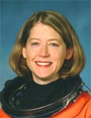

Lyndon B. Johnson Space Center
Houston, Texas 77058
|
National Aeronautics and Space Administration Lyndon B. Johnson Space Center Houston, Texas 77058 |
 |
Biographical Data |
||
Pamela Ann Melroy (Colonel, USAF, RET.)
NASA Astronaut (FORMER)
PERSONAL DATA: Born September 17, 1961, in Palo Alto, California. Married to Douglas W. Hollett. Considers Rochester, New York, to be her hometown. Pam enjoys theatre, tap and jazz dancing, reading, cooking and flying. Her parents, David and Helen Melroy, reside in upstate New York.
EDUCATION: Graduated from Bishop Kearney High School, Rochester, New York, in 1979. Bachelor of Arts degree in Physics and Astronomy from Wellesley College, 1983. Master of Science degree in Earth and Planetary Sciences from Massachusetts Institute of Technology, 1984.
ORGANIZATIONS: Member of the Wellesley College Board of Trustees; the Society of Experimental Test Pilots; the Association of Space Explorers and The Ninety-Nines, Inc.
SPECIAL HONORS: Recipient of the Air Force Meritorious Service Medal, First Oak Leaf Cluster; Air Medal, First Oak Leaf Cluster; Aerial Achievement Medal, First Oak Leaf Cluster and Expeditionary Medal, First Oak Leaf Cluster. Recipient of the NASA Distinguished Service Medal and the NASA Outstanding Leadership Medal.
EXPERIENCE: Colonel Melroy was commissioned through the Air Force Reserve Officers’ Training Corps (ROTC) program in 1983. After completing a Master’s degree, she attended undergraduate pilot training at Reese Air Force Base in Lubbock, Texas, and graduated in 1985. Melroy flew the KC-10 for six years at Barksdale Air Force Base in Bossier City, Louisiana, as a co-pilot, aircraft commander and instructor pilot. Colonel Melroy is a veteran of Operation Just Cause and Operation Desert Shield/Desert Storm, with more than 200 combat and combat support hours. In June 1991, she attended the Air Force Test Pilot School at Edwards Air Force Base, California. Upon her graduation, she was assigned to the C-17 Combined Test Force, where she served as a test pilot until her selection for the Astronaut Program. She has logged more than 6,000 hours flight time in more than 50 different aircraft. Colonel Melroy retired from the Air Force in February 2007.
NASA EXPERIENCE: Selected as an astronaut candidate by NASA in December 1994, Colonel Melroy reported to the Johnson Space Center, Texas, in March 1995. She completed a year of training and evaluation and was qualified for flight assignment as a shuttle pilot. Initially assigned to astronaut support duties for launch and landing, she also worked advanced projects for the Astronaut Office. She also performed Capsule Communicator (CAPCOM) duties in mission control. Colonel Melroy served on the Columbia Reconstruction Team as the lead for the crew module and served as Deputy Project Manager for the Columbia Crew Survival Investigation Team. In her final position, she served as Branch Chief for the Orion branch of the Astronaut Office. Colonel Melroy served as pilot on two flights (STS-92 in 2000 and STS-112 in 2002) and was the mission commander on STS-120 in 2007, making her one of only two women who commanded the space shuttle. She has logged more than 924 hours (more than 38 days) in space. Colonel Melroy left the agency in August 2009 and currently serves as Deputy Director, Tactical Technology Office at the Defense Advanced Research Projects Agency (DARPA).
SPACEFLIGHT EXPERIENCE: STS-92 Discovery (October 11 to October 24, 2000) was launched from the Kennedy Space Center, Florida, and returned to land at Edwards Air Force Base. During the 13-day flight, the seven-member crew attached the Z1 Truss and Pressurized Mating Adapter 3 to the International Space Station using Discovery’s robotic arm and performed four spacewalks to configure these elements. This expansion of the station opened the door for future assembly missions and prepared the station for its first resident crew. The STS-92 mission was accomplished in 202 orbits, traveling 5.3 million miles in 12 days, 21 hours, 40 minutes and 25 seconds.
STS-112 Atlantis (October 7 to October 18, 2002) launched from and returned to land at the Kennedy Space Center. STS-112 was an International Space Station assembly mission, during which the crew conducted joint operations with the Expedition 5 crew by delivering and installing the S1 Truss (the third piece of the station’s 11-piece Integrated Truss Structure). It took three spacewalks to outfit and activate the new component, during which Colonel Melroy acted as internal spacewalk choreographer. STS-112 was the first shuttle mission to use a camera on the external tank, providing a live view of the launch to flight controllers and NASA TV viewers. The mission was accomplished in 170 orbits, traveling 4.5 million miles in 10 days, 19 hours and 58 minutes.
STS-120 Discovery (October 23 to November 7, 2007) launched from and returned to land at the Kennedy Space Center. During the mission, the Node 2 element named “Harmony” was delivered to the International Space Station. This element opened up the capability for future international laboratories to be added to the station. In addition, the P6 Solar Array was relocated from the Z1 Truss to the end of the port side of the Integrated Truss Structure. During the redeploy of the array, the array panels snagged and were damaged. An unplanned spacewalk was successfully performed to repair the array. The mission was accomplished in 238 orbits, traveling 6.2 million miles in 15 days, two hours and 23 minutes.
APRIL 2013
This is the only version available from NASA. Updates must be sought from the above named individual.
{kind=link}